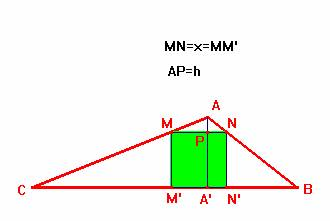

Problema 75
Dado un triángulo de lados 7 cm, 5 cm, y 3 cm, inscribir un cuadrado.

Siguiendo con la misma notación que en los problemas anteriores, podemos establecer la siguiente relación entre los lados de los triángulos semejantes ANM y ABC
de donde obtenemos:
lo que significa poder construir AP=h como el segmento tercera proporcional entre h7+7 y h7.
Veamos ahora la solución numérica:
Si unimos M con N resulta el triángulo MBC semejante al inicial ABC, y por tanto deberá verificarse:
relación válida e igual a .
Nota. No existen más soluciones que ésta ya que en los demás casos si queremos que el lado del cuadrado inscrito sea paralelo a alguno de los lados b y c, por el hecho de ser el ángulo A obtuso (=120º), si trazamos la perpendicular desde un punto del lado AB(AC) hasta el lado AC (AB) cortaría en la prolongación del lado respectivo.